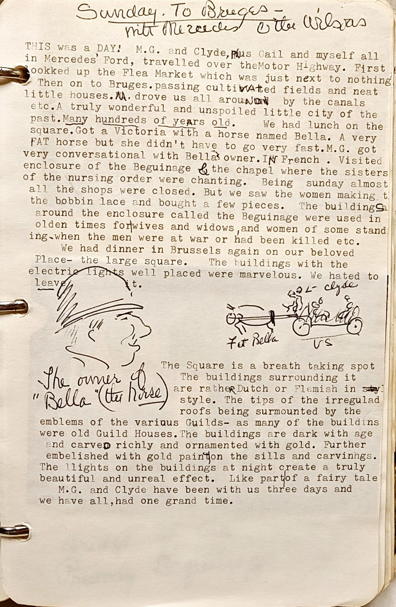

1 THIS was a DAY! M.G. and Clyde, pLus Gail and myself all
2 in Mercedes' Ford, travelled over theMotor Highway. First
3 lookked up the Flea Market which was just next to nothing
4 Then on to Bruges.passing cultVAted fields and neat
5 little houses.M. drove us all arouND by the canals
6 etc.A truly wonderful and unspoiled little city of the
7 past. Many hundreds of years old. We had lunch on the
8 square.Got a Victoria with a horse named Bella. A very
9 FAT horse but she didn't have to go very fast.M.G. got
10 very conversational with Bella's owner.IN French. Visited
11 enclosure of the Beguinage & the chapel where the sisters
12 of the nursing order were chanting. Being sunday almost
13 all the shops were closed. But we saw the women making
14 the bobbin lace and bought a few pieces. The buildingS
15 around the enclosure called the Beguinage were used in
16 olden times for|wives and widows, and women of some stand
17 ing when the men were at war or had been killed etc.
18 We had diner in Brussels again on our beloved
19 Place- the large square. The buildings with the
20 electric lights well placed were marvelous. We hated to
21 leave
22 The Square is a breath taking spot
23 The buildings surrounding it
24 are ratheR Dutch or Flemish in sty
25 style. The tips of the irregulad
26 roofs being surmounted by the
27 embelished with gold paint|on the sills and carvings.
28 The llights on the buildings at night create a truly
29 beautiful and unreal effect. Like part|of a fairy tale
30 M.G. and Clyde have been with us three days and
31 we have all,had one grand time.